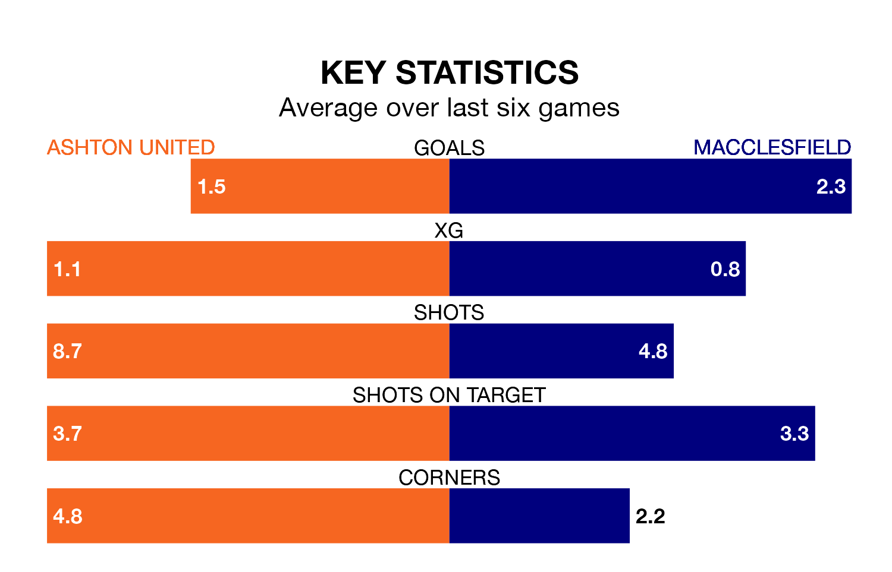

Macclesfield are strong favourites to take all three points despite Ashton United's home advantage in Tuesday's late match at Hurst Cross.
*Betting Company* are offering odds of 1.85 on Macclesfield sealing the win, with the visitors sitting second in the Northern Premier League table.
Ashton, who are 10th in the league and 10 points behind Macclesfield, are priced at 3.2 to win. A draw is set at 3.75.
With 63 goals in 29 games so far this season, Macclesfield are the league's third-highest scorers with 2.2 goals per game. And they are conceding fewer than average, letting in 36 goals at a rate of 1.2 per game.
Ashton, meanwhile, are below average scorers, with 1.6 goals per game, compared to a league average of 1.7. They have also conceded 1.6 goals per game.
United are in mixed form in the Northern Premier League, with one win and four draws from their last six games.
With four wins and two losses over that period, the visitors' form is better – they have taken 12 points from 18, compared to the home team's seven.
Ashton's last match was on Saturday, a 1-1 draw against Bradford Park Avenue.
Macclesfield beat Ilkeston Town 5-3 last time out, also on Saturday.
Updated: 12:18 (UTC), 19/02/24